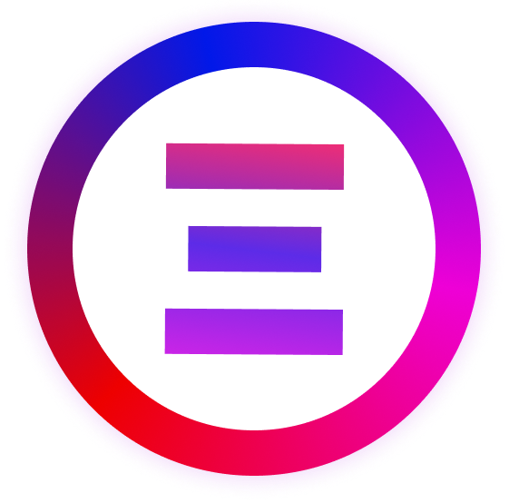

<div class="flex flex-col justify-between  bg-[radial-gradient(ellipse_at_top,_var(--tw-gradient-stops))]
   from-violet-50 to-blue-50 min-h-screen text-slate-700">
  <div>
    <div class="w-full flex-row justify-center">
      <a href="https://t.me/+3t-ahjvcRfsxZTVk" class="w-full py-2 hover:animate-pulse
       bg-indigo-700 cursor-pointer hover:bg-indigo-900 transition-all
       flex flex-row justify-center text-white">
        <div class="max-w-7xl w-full text-xs flex flex-row justify-center items-center gap-x-2">

          Join our Telegram group for early customers & supporters. Propose new features & get one-on-one feedback!
        </div>
      </a>
    </div>
    <app-navbar></app-navbar>
    <div *ngIf="currentProject$ | async; else noProject" class="w-full flex flex-col mt-2 items-center px-8 mb-12">
      <div class="max-w-7xl w-full flex flex-col gap-x-4">
        <div
          class="text-xs bg-yellow-50 text-amber-700 flex flex-row gap-x-2 justify-center items-center rounded-lg py-4 shadow-sm text-center font-medium"
          *ngIf="(projectID$ | async) === null">
          <svg xmlns="http://www.w3.org/2000/svg" fill="none" viewBox="0 0 24 24" stroke-width="2" stroke="currentColor"
            class="w-4 h-4">
            <path stroke-linecap="round" stroke-linejoin="round"
              d="M12 9v3.75m-9.303 3.376c-.866 1.5.217 3.374 1.948 3.374h14.71c1.73 0 2.813-1.874 1.948-3.374L13.949 3.378c-.866-1.5-3.032-1.5-3.898 0L2.697 16.126zM12 15.75h.007v.008H12v-.008z" />
          </svg>
          Your project needs to be activated. Go to the SDK tab & create a project API Key
        </div>
        <div class="flex flex-col w-full">
          <app-sidebar></app-sidebar>
        </div>
        <div class="w-full">
          <router-outlet></router-outlet>
        </div>
      </div>
    </div>
    <ng-template #noProject>
      <div class="gap-x-2 flex flex-row items-center justify-center my-12 text-sm uppercase font-semibold">
        <div>No project selected. Choose a project by clicking the</div>
        <svg xmlns="http://www.w3.org/2000/svg" fill="none" viewBox="0 0 24 24" stroke-width="2.5" stroke="currentColor"
          class="w-10 h-10 bg-white p-3 border rounded-full">
          <path stroke-linecap="round" stroke-linejoin="round"
            d="M3 7.5L7.5 3m0 0L12 7.5M7.5 3v13.5m13.5 0L16.5 21m0 0L12 16.5m4.5 4.5V7.5" />
        </svg>
        <div>icon in the navbar.</div>
      </div>
    </ng-template>
  </div>

  <div class="pb-8 flex flex-row justify-center border-indigo-100 bg-indigo-50">
    <div class="max-w-7xl w-full mt-8 text-xs uppercase flex flex-row justify-between">
      <div class="flex flex-row gap-x-4 items-center">
        
        Polyflow (C) 2023, all rights reserved
      </div>
      <div class="flex hover:text-indigo-700 cursor-pointer flex-row gap-x-2 items-center font-semibold">
        <svg xmlns="http://www.w3.org/2000/svg" fill="none" viewBox="0 0 24 24" stroke-width="1.5" stroke="currentColor"
          class="w-6 h-6">
          <path stroke-linecap="round" stroke-linejoin="round"
            d="M20.25 8.511c.884.284 1.5 1.128 1.5 2.097v4.286c0 1.136-.847 2.1-1.98 2.193-.34.027-.68.052-1.02.072v3.091l-3-3c-1.354 0-2.694-.055-4.02-.163a2.115 2.115 0 01-.825-.242m9.345-8.334a2.126 2.126 0 00-.476-.095 48.64 48.64 0 00-8.048 0c-1.131.094-1.976 1.057-1.976 2.192v4.286c0 .837.46 1.58 1.155 1.951m9.345-8.334V6.637c0-1.621-1.152-3.026-2.76-3.235A48.455 48.455 0 0011.25 3c-2.115 0-4.198.137-6.24.402-1.608.209-2.76 1.614-2.76 3.235v6.226c0 1.621 1.152 3.026 2.76 3.235.577.075 1.157.14 1.74.194V21l4.155-4.155" />
        </svg>
        Contact support
      </div>
    </div>
  </div>
</div>

<app-upsell-modal></app-upsell-modal>
<app-project-switcher></app-project-switcher>